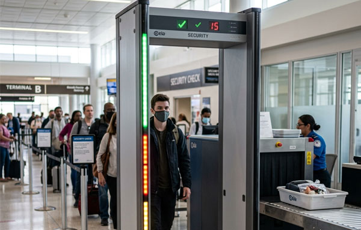
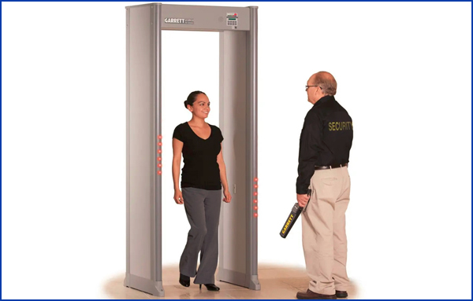

أجهزة فحص الأمتعة بالأشعة السينية وأجهزة المسح الضوئي للمرور
نوفر معدات فحص أمني معتمدة لنقاط التفتيش، مما يساعد مراكز التسوق والمكاتب الحكومية والمطارات والفنادق على كشف الأسلحة والمواد المهربة.
بوابات كشف متعددة المناطق وأجهزة فحص أمتعة عالية الدقة
نُوفر ونُهيئ أجهزة فحص أمتعة بالأشعة السينية عالية الأداء، تُنتج صورًا عالية الدقة ومُفصلة الألوان لمحتويات الحقائب. تُسهّل أجهزتنا على المُشغلين رصد التهديدات فورًا.
تتميز أجهزة الكشف عن المعادن التي نوفرها بمناطق كشف متعددة مزودة بمؤشرات LED على كلا الجانبين، لتحديد مواقع الأجسام المعدنية المخفية على الأشخاص الذين يمرون عبر البوابة.
أجهزة تنبيه لكشف التهديدات وأجهزة فحص يدوية
نقدم أنظمة عالية الدقة لفحص الحشود بسرعة، مع إمكانية فحص العملات المعدنية الصغيرة والمفاتيح.
-
أجهزة مسح ضوئي بالأشعة السينية للأمتعة والطرود مع فحص المواد العضوية وغير العضوية.
-
بوابات كشف معادن متعددة المناطق مزودة بمؤشرات LED دقيقة.
-
أجهزة كشف معادن يدوية مريحة للفحص الشخصي.
-
أنظمة عالية الإنتاجية مناسبة لأوقات الذروة.
تتميز وحدات التحكم الخاصة بنا بمستشعرات ثنائية الطاقة، وأدوات تكبير الصور، وسجلات تشغيل لمساعدة فرق نقاط التفتيش على العمل بكفاءة.
الفحص الكهرومغناطيسي الصناعي والتسخين بالحث
تُعدّ شركة مجال الشبكات الأمنية و تقنية المعلومات، بصفتها قسمًا رئيسيًا ضمن عروضنا الأمنية المتخصصة، شركة صناعية متخصصة في أنظمة الفحص الكهرومغناطيسي وأنظمة التسخين بالحث. وبفضل تنفيذ جميع أعمال الهندسة والإنتاج داخليًا بالكامل، نضمن دقةً مطلقةً، وإمكانية التخصيص، والامتثال لأعلى معايير الأمن الصناعي.
ولضمان التشغيل السلس عالميًا، توفر شركة مجال شبكة دعم شاملة، بالإضافة إلى برامج تدريبية للحصول على شهادات في استخدام معداتها، والامتثال لمعايير السلامة، وصيانتها. وهذا يضمن جاهزية أفراد الأمن التامة لإدارة نقاط التفتيش عالية الكفاءة.
أنظمة فحص الأمتعة والشحنات المعيارية
صُممت أنظمة فحص الأمتعة لدينا خصيصًا لفحص الأمتعة العادية، والأمتعة كبيرة الحجم، وحاويات الشحن في المطارات، ومراكز الخدمات اللوجستية، والمعابر الحدودية. يتيح تصميمها المعياري سهولة تعديلها، وإعادة تهيئتها، وربطها ببعضها البعض، مما يضمن اندماجها بسلاسة في شبكات الأمن القائمة.


شبكات تكنولوجيا المعلومات والأمن المتكاملة منشركة مجال ،
في شركة مجال للشبكاتالأمنية و تقنية المعلومات، نربط بين أجهزة الأمن المتطورة والبنية التحتية الرقمية. نصمم وننشر شبكات البيانات الخلفية، وكابلات الألياف الضوئية عالية السرعة، وغرف الخوادم الآمنة اللازمة لربط أنظمة الفحص المعيارية. من خلال دمج أجهزة المسح بالأشعة السينية، وبوابات المرور، وأنظمة الشحن في وحدات التحكم المركزية، نوفر بيانات آنية عن التهديدات، وتشخيصًا عن بُعد، وأرشفة آمنة لقواعد بيانات المسح.